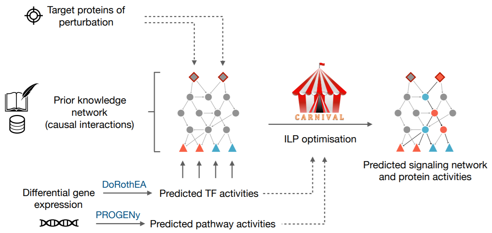

Overview
CARNIVAL (CAusal Reasoning for Network identification using Integer VALue programming) is a method for the identification of upstream reguatory signalling pathways from downstream gene expression (GEX).
This is a tool currently being developed by the saezlab members and is an extension of the previously implemented Causal Reasoning (Melas et al.) method. More detailed information on the CARNIVAL pipeline as well as benchmarking and applicational studies are available on following paper.
Liu A., Trairatphisan P., Gjerga E. et al. From expression footprints to causal pathways: contextualizing large signaling networks with CARNIVAL npj Systems Biology and Applications volume 5, Article number: 40 (2019) (equal contributions).
The aim of the CARNIVAL pipeline is to identify a subset of interactions from a prior knowledge network that represent potential regulated pathways linking known or potential targets of perturbation towards active transcription factors derived from GEX data. The pipeline includes a number improved functionalities comparing to the original version and consists of the following processes:
1) Transcription factors’ (TFs) activities and pathway scores from gene expressions can be inferred with our in-house tools DoRothEA & PROGENy, respectively.
2) TFs’ activities and signed directed protein-protein interaction networks with or without the provided target of perturbations and pathway scores are then used to derive a series of linear constraints to generate integer linear programming (ILP) problems.
3) An ILP solver (IBM ILOG CPLEX) is subsequently applied to identify the sub-network topology with minimised fitting error and model size.
Applications of CARNIVAL include the identification of drug’s modes of action and of deregulated processes in diseases (even if the molecular targets remain unknown) by deciphering the alterations of main signalling pathways as well as alternative pathways and off-target effects.

Getting Started
A tutorial for preparing CARNIVAL input files starting from differentially gene expression (DEG) and for running the CARNIVAL pipeline are provided as vignettes in R-Markdown, R-script and HTML formats. The wrapper script “runCARNIVAL” was introduced to take input arguments, pre-process input descriptions, run optimisation and export results as network files and figures. Three built-in CARNIVAL examples are also supplied as case studies for users.
Prerequisites
CARNIVAL requires the interactive version of IBM Cplex or CBC-COIN solver as the network optimiser. The IBM ILOG Cplex is freely available through Academic Initiative here. The CBC solver is open source and freely available for any user. Alternatively for smaller cases, users can rely on the freely available lpSolve R-package.
Installation
To install the stable version from Bioconductor:
# install from bioconductor
if (!requireNamespace("BiocManager", quietly = TRUE))
install.packages("BiocManager")
BiocManager::install("CARNIVAL")Otherwise, it is possible to install the newest version from github using:
# install the development version from GitHub
# install.packages("devtools")
devtools::install_github("saezlab/CARNIVAL")Inputs and Outputs of CARNIVAL
The input for CARNIVAL consists of:
A prior knowledge network (PKN) comprises a list of signed and directed interactions between signalling proteins. (Required)
Inferred transcription factor activities which can be inferred from GEX data using DoRothEA. (Required)
A list of target of perturbations (drugs, diseases, etc.) with or without their effects on signalling proteins. (Optional)
Inferred pathway scores representing signalling pathway activities from GEX data using PROGENy (Optional)
The outcome of CARNIVAL includes the list of identified networks that fitted to the provided experimental data as well as the predicted activities of signalling proteins in the networks whether they are up- or down-regulated.
Running CARNIVAL
To obtain the list of tutorials/vignettes of the CARNIVAL package, user can start with typing the following commmand on R-console:
vignette("CARNIVAL-vignette")References
Melas IN, Sakellaropoulos T, Iorio F, Alexopoulos L, Loh WY, Lauffenburger DA, Saez-Rodriguez J, Bai JPF. (2015). Identification of drug-specific pathways based on gene expression data: application to drug induced lung injury. Integrative Biology, Issue 7, Pages 904-920, https://doi.org/10.1039/C4IB00294F.
DoRothEA - Garcia-Alonso et al.:
Garcia-Alonso L, Holland CH, Ibrahim MM, Turei D, Saez-Rodriguez J. (2018). Benchmark and integration of resources for the estimation of human transcription factor activities. Genome Research 2019. 29: 1363-1375, https://doi.org/10.1101/gr.240663.118
Schubert M, Klinger B, Klünemann M, Sieber A, Uhlitz F, Sauer S, Garnett MJ, Blüthgen N, Saez-Rodriguez J. (2018). Perturbation-response genes reveal signaling footprints in cancer gene expression. Nature Communication, Issue 9, Nr. 20. https://doi.org/10.1038/s41467-017-02391-6.
Studies where CARNIVAL was used
Buhl E.M. et al. Dysregulated mesenchymal PDGFR‐β drives kidney fibrosis EMBO Mol Med (2020)e11021 doi: 10.15252/emmm.201911021
Binenbaum I. et. al. Bioinformatic framework for analysis of transcription factor changes as the molecular link between replicative cellular senescence signaling pathways and carcinogenesis Biogerontology doi: 10.1007/s10522-020-09866-y
Acknowledgement
CARNIVAL has been developed as a computational tool to analyse -omics data within the TransQST Consortium and H2020 Symbiosys ITN Training Network.
“This project has received funding by the European Union’s H2020 program (675585 Marie-Curie ITN ‘‘SymBioSys’’) and the Innovative Medicines Initiative 2 Joint Undertaking under grant agreement No 116030. The Joint Undertaking receives support from the European Union’s Horizon 2020 research and innovation programme and EFPIA.”